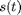
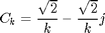
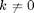
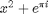

Math257 Take Home #3
https://engineering.purdue.edu/ME365/Textbook/chapter8.pdf The Fourier coeffcients of the signal  are given by
$ when  and
clc;clear; % ch8f6.m program to plot the Fourier Coefficients % of a pulse train. T1=T/4 and T=0.125second. % https://engineering.purdue.edu/ME365/Textbook/chapter8.pdf % Xl=1; T=0.125; T1=T/4; A0_2=Xl*T1/T; k=1:18; % Ak=Xl*sin(2*pi*k*T1/T)./(k*pi); % Bk=Xl*(1-cos(3*pi*k*T1/T))./(k*pi);

A0_2=1; Ck=sqrt(2)./k-sqrt(2)./k*1i; Ak=2*real(Ck); Bk=2*imag(Ck); Thk=atan2(Bk,Ak); Mk=sqrt(Ak.*Ak+Bk.*Bk); fk=k/T; subplot(221) stem([0 fk],[A0_2 Mk]) xlabel('Frequency – Hz') ylabel('Amplitude/X1 – V') title('AMPLITUDE SPECTRUM') subplot(222) stem([0 fk],[0 Thk]) xlabel('Frequency – Hz') ylabel('Phase - rads.') title('PHASE SPECTRUM')